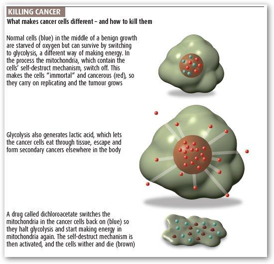

#13810 1 2007-01-31T23:11:19Z Guest Well, here is why.
Yup, its true.
Read the article, and discuss.
My opinion is that it is disgusting how companies these days are so profit-oriented, and don't care about people's lives. I am ashamed for today's society.
Oh, and here are some links to look over.
Link 1. Link 2. Link 3.
And here is how it works...

#292284 2 2007-01-31T23:22:07Z Blizzard I was just talking about this with a friend the other day. It's pretty sad how corrupt society has become. Screw money, if people die from cancer, who'll buy their things in the first place?
#292290 3 2007-01-31T23:31:16Z Topolord well that's pretty bad, but I don't think they can stop the drug from being produced. if it's as cheap as that article says, It might be manufactured by smaller companies. just saying.
#292294 4 2007-01-31T23:37:13Z 7! Woo for Edmonton.
"Gatorade with cancer control."
Many societies have been corrupt or corrupted. actually, I think every society in history has been corrupted or will be in at some point. I'm going to print that out and show it to my ex-biology teacher.
#292305 5 2007-02-01T00:08:54Z McP3000 I dont believe it. I thought cancer was some impossible, far-reach disease we were baffled about. I hate people sometimes.

#292321 6 2007-02-01T00:48:51Z stepself My opinion is that it is disgusting how companies these days are so profit-oriented, and don't care about people's lives. I am ashamed for today's society.
Having read the (NewScientist) article, I have to say it sounds promising. I wouldn't be so quick to jump on the industry-hating bandwagon yet (as much as I enjoy that myself sometimes). A cancer-fighting drug like this, if it works, would be impossible to keep out of the hands of the public. I'd imagine that right now, DCA is been put through a series of clinical trials. These trials take years and can be incredibly expensive to fund. If there's any misstep along the way, the trials have to be restarted (at least, that's how it works here). I've heard many stories over the years of "miracle" cancer-curing drugs that never made it to production because of failure to make it through clinical trials.
I suppose that DCA has an advantage, since it's already on the market. I'm really curious as to when we'll hear about this drug again...
#292334 7 2007-02-01T01:28:27Z Trogdor007 What's the worst thing the DCA could find?
This product has been known to both cure all forms of cancer, and cause AIDS. Ironic, ain't it?
#292335 8 2007-02-01T01:40:48Z Twistkill This seems so sudden... It's like scientists came out of nowhere with this, and acted so calm about it, too.
Scientist 1: "Hmm... look at this. This drug called DCA can apparently cure several forms of cancer. It's also really cheap and simple to distribute."
Scietntist 2: "How long have we been researching to achieve the cure for cancer again? The past hundreds of years? And now, out of nowhere, we have a cure?!
Scientist 1: "Yup."
Scientist 2: "You're not at all shocked by this?"
Scientist 1: "Not really... are you coming to my Superbowl party?"
Scientist 2: "... I'm going to eat your children."
#292339 9 2007-02-01T01:53:19Z stepself This seems so sudden... It's like scientists came out of nowhere with this, and acted so calm about it, too.
Most experienced scientists would reserve excitement until after the product hits the market. Disappointment is much more frequent than you might think.
#292353 10 2007-02-01T02:12:52Z McP3000 If one person/corporation gets a patent on the drug...BOOM, billions of dollars easy. I mean, its not like cancer is the most prevalent and deadly disease out there....is it?

#292368 11 2007-02-01T03:04:27Z Guest What's the worst thing the DCA could find?
This product has been known to both cure all forms of cancer, and cause AIDS. Ironic, ain't it?
Show some sources. AIDS is an STD, not something you get from turning on the mitochandria in a few cells.
#292375 12 2007-02-01T03:30:28Z Topolord yeah, I don't see how a drug could cause AIDS. Super-AIDS maybe...
#292385 13 2007-02-01T04:06:11Z blue_tetris ...I'm sure Trogdor was joking.
Anyhoo:
Curing cancer would be devastating to the economy. Already, social security (which used to used money from 70 people to support 1 person) currently causes each individual to pay 1/4 of their own future salary once they've retired. Keeping old people alive longer just puts more strain on all of our social systems designed to make those years truly "golden". Sadly, if you spend half of your life as a retiree, then you're spending too little time working and too much time sucking at the teet of financial redistribution. Moreover, all of the industries which make money from existing cancer treatments (such as the profession of oncology and the manufacture of medicines to help deal with pain and appetite loss) will lose business. Many people will be put out of work.
We can't be a bunch of bleeding hearts and sympathize for every person whose time is up. Death is a necessary and profitable occurence in our society. It's great that you want to help save people's lives; but if your dad was a funeral director who got downsized because of a decline in deaths, I imagine you'd think differently.
#292387 14 2007-02-01T04:11:12Z Guest ...I'm sure Trogdor was joking.
Anyhoo:
Curing cancer would be devastating to the economy. Already, social security (which used to used money from 70 people to support 1 person) currently causes each individual to pay 1/4 of their own future salary once they've retired. Keeping old people alive longer just puts more strain on all of our social systems designed to make those years truly "golden". Sadly, if you spend half of your life as a retiree, then you're spending too little time working and too much time sucking at the teet of financial redistribution. Moreover, all of the industries which make money from existing cancer treatments (such as the profession of oncology and the manufacture of medicines to help deal with pain and appetite loss) will lose business. Many people will be put out of work.
We can't be a bunch of bleeding hearts and sympathize for every person whose time is up. Death is a necessary and profitable occurence in our society. It's great that you want to help save people's lives; but if your dad was a funeral director who got downsized because of a decline in deaths, I imagine you'd think differently.
Ah, but with more people alive, that would mean more people on the roads. This will cause an influx of car wrecks and deaths will rise. This will help out the lower socioeconomic class who need jobs and can get them in body shops. This way, the population and economy will balance out.
#292394 15 2007-02-01T04:46:15Z Kablizzy Super. After my dad dies of cancer. Super.
#292398 16 2007-02-01T05:07:29Z Bigblargh Shoot, man. I'd throw all the money I had at this even if I wouldn't profit.
#292399 17 2007-02-01T05:15:47Z dejablue b_t has a point, but I really can't say I don't want doctors to know the cure for cancer. I would love for them to find one and for it to be easy to use and easy to make and everything. That would be perfect.
#292401 18 2007-02-01T05:28:51Z Kablizzy Well, I think the concern is that the economy would crash, but while cancer is a huge deal, it isn't lupus, it isn't autism, it isn't aids, it isn't a gunshot wound to the eyeball, it isn't the flu, it isn't any psychological disorder, and I'm certain that the other diseases would keep things at least somewhat stable.
#292442 19 2007-02-01T12:38:07Z Trogdor007 (I was SO joking. Did you even read the post, Obby?)
I heard that currently, cancer treatments kill more people then the cancer itself. Is that still true?
#292463 20 2007-02-01T15:12:32Z scythe33 ...I'm sure Trogdor was joking.
Anyhoo:
Curing cancer would be devastating to the economy. Already, social security (which used to used money from 70 people to support 1 person) currently causes each individual to pay 1/4 of their own future salary once they've retired. Keeping old people alive longer just puts more strain on all of our social systems designed to make those years truly "golden". Sadly, if you spend half of your life as a retiree, then you're spending too little time working and too much time sucking at the teet of financial redistribution. Moreover, all of the industries which make money from existing cancer treatments (such as the profession of oncology and the manufacture of medicines to help deal with pain and appetite loss) will lose business. Many people will be put out of work.
We can't be a bunch of bleeding hearts and sympathize for every person whose time is up. Death is a necessary and profitable occurence in our society. It's great that you want to help save people's lives; but if your dad was a funeral director who got downsized because of a decline in deaths, I imagine you'd think differently.
That didn't stop us curing/vaccinating syphilis, malaria, polio, smallpox, or leprosy, did it?
There are still plenty of other ways to die (tuberculosis, AIDS, alzheimer's, CJD, staphylococcus aureus infection, being shot in the face).
Retirment ages are also steadily rising, and it's not like we're forcing old people to work in factories, but really, jobs take less of a toll on people's body these days. It was impossible for a 60-year-old to work in a mine, but it's little trouble for them to sit at a computer and punch numbers in. Moreover, people would still die at the same rate, they would just do it later in life. Moreover, unlike diseases of old age, cancer kills people at all ages, including children and those still in the workforce. Soceity would most likely even out as far as finance is concerned, and may actually gain money. Plus, cancer kills slowly, and the (extremely! cisplatin?) expensive drugs (and what about all those people who survive the current treatments? now they're decrepit, and living off welfare!) put a tremendous strain on insurance companies, so rates will most surely go down quite a bit, jumpstarting the economy. In short, the economy will benefit. Oncology researchers have a degree in medicine. It's not hard to find work with that. Moreover, you're only thinking of the American economy. In countries with institutionalized free medicine, all a better, safer cure will do is save the government money. Governments will never pass up a chance to save money
You do make an excellent devil's advocate. 
#292550 21 2007-02-01T21:41:46Z Anonymouse? they havent told us......Those BASTARDS!
#292596 22 2007-02-01T23:00:24Z Guest they havent told us......Those BASTARDS!
Use your serious discussion voice, please.
#292606 23 2007-02-01T23:20:47Z blue_tetris Honestly, I was only posing a counter-point. We can't very well have a thread if we all have the same opinion. I'm glad they've taken measures to find a cure for cancer.
That said, I believe in the wholesomeness of people. Especially scientists. These guys spent countles dollars, wrote dozens of grants, and spent thousands of man-hours to perfect this medicine. I'm sure they'd want their work realized. These scientists certainly mean well. They're not trying to keep a miracle cure (which they themselves created) off the shelves, so to speak.
Also, I doubt the government is standing in their way. In all likelihood, they're still trying to test for possible counteractions with other drugs, as well as possible side-effects. They're also probably looking for a company like GlaxoSmithCline to go through all the paperwork to get a manufacturing system in line and assemble a knowledge-base for a marketing staff to properly distribute information about the product's efficacy to prominent medical journals.
#292615 24 2007-02-01T23:33:33Z disconinja b_t's (edit: the first post, where he calls this a bad thing) point is whack, everyones going to die eventually, and curing cancer won't bring immortality for anyone. All the people will still fill your funeral home eventually. Look at what causes cancer, (besides smoking) they're mostly not considered stupid things to do. When someone has a life-threatening disease, we usually treat them. Cancer is a life threatening disease, and the people who get aren't idiots who go out and find something to kill themselves with, they're people who use artificial sweeteners or like a nice tan. Again, (because someone will forget) smoking is a big exception. Of course there are other ways that smoking kills and we won't eliminate its danger. Even if we did, it would then fall into the same category as artificial sweeteners and long exposure to sunlight.
#292626 25 2007-02-02T00:11:04Z Viridovix Don't be a stupid head. Young children get cancer randomly.
#292628 26 2007-02-02T00:18:14Z Guest Viridovix, for your own sake, don't use that language here. People won't like it, and it isn't necessary for a good discussion.
#292635 27 2007-02-02T00:35:39Z Topolord I think we can pretty much say that the destruction of cancer will not drastically increase average human life-span. In any case, the curing of cancer will no doubt relocate funds and resources to other fields, such as the study of AIDS.
#292639 28 2007-02-02T00:42:13Z scythe33 I think one of the reasons that the media hasn't talked about this is because-ever think of what would happen if they did? People would run around doing all sorts of stupid things, no doubt some would try to steal it for their dying relative. I work in a hospital (well, i'm a teenage volunteer, not a doctor). Old people are not exactly intelligent. I'd hear a ton of "Doc, get me that new thing, NOW!", which is especially problematic because it hasn't been fully tested, and it's used for other things right now, so of course we've gotta have it somewhere.
I'm not that worried about funding. There was also no patent on the first effective antibiotic, sulfanilamide, because it was already used in the dye industry, but it was distributed fine.
Oh, and long exposure to sunlight is bad for you. 15 minutes a day is considered optimal, because it does actually help a little, in the same way that one glass of red wine help because small amounts of alcohol may actually be beneficial and the presence of procyanidins; the concentration of resveratrol is too low for any significant effect, we believe.
#292653 29 2007-02-02T01:27:34Z disconinja Viridovix, (if you were aiming your last post at me) my point was that cancer doesn't discriminate, it can go after anyone. Should we let someone die just because they have a disease, let alone one that is so random? Should we hide this cure so that potentially great people die off simply because because nature has thrust a horrible but curable disease on them?
Also, to scythe: I know that UV rays are harmful in other ways, but mostly only from extended exposure. You can get cancer simply from being outside for the recommended 15 minutes.
#292671 30 2007-02-02T01:42:54Z Viridovix @Obby: I get mad when people make it seem that cancer is always caused by the victim.
@Disconinja: You were suggesting in your last post that people that have cancer deserve it. Now your view is completely different.?.
#292681 31 2007-02-02T01:52:22Z disconinja No, viridovix, I've been consistently opposed to the notion of blaming the victim. I simply devoted to much of my first post in this thread pointing out smoking as an exception. We can all agree that people who consistently ignore all Surgeon General's warnings and smoke three packs a day have pretty much said "screw it, I want lung cancer". Also, the fact that I was dissenting from b_t's first post, which was against this, shows that I support it.